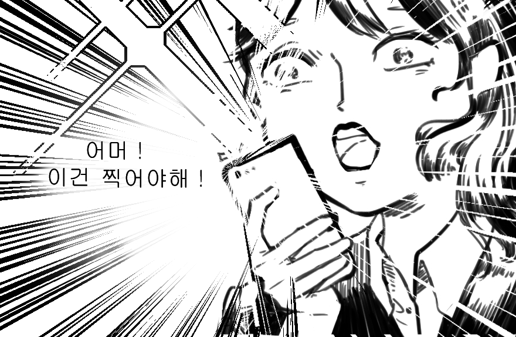
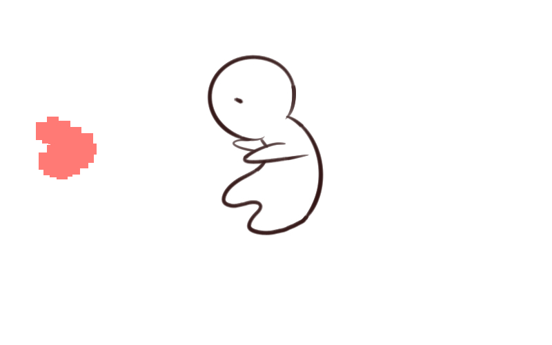

친구와 <나의 어린 왕자에게> 전시를 보고왔다.
행성을 여행하는 3D 시뮬레이션 영상
어린왕자의 감성과 사상을 보여주는 페인팅, 구조물, 영상,
비디오 아트, 네온사인. 다들 사진찍느라 바빠보였다.
가장 마음에 들었던 문구가 하나 있다.
Forget that I am Ashamed
술병들과 함께 빨간 배경안에 써져있었다.
어린왕자를 읽은 지 오래되어 어디에 나오는 대사인지는 모르겠으나 강렬한게 마음에 쏙 들길래 엽서도 샀다.
눈도 즐겁고 머리고 들거운 전시였다.